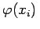
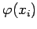
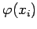

Inhalt Index DeskTop Bronstein

 Wahrscheinlichkeitsrechnung und Mathematische Statistik Theorie der Meßfehler Fehlerfortpflanzung und Fehleranalyse
Wahrscheinlichkeitsrechnung und Mathematische Statistik Theorie der Meßfehler Fehlerfortpflanzung und Fehleranalyse


Unter Fehleranalyse versteht man allgemein die Analyse der Fortpflanzung von Fehlern bei der Berechnung einer Funktion , wenn Größen höherer Ordnung vernachlässigt werden. Im Rahmen der Theorie der Fehleranalyse wird mit Hilfe eines Algorithmus untersucht, wie sich ein Eingangsfehler  im Endergebnis  auswirkt. Man spricht in diesem Zusammenhang auch von differentieller Fehleranalyse.
im Endergebnis  auswirkt. Man spricht in diesem Zusammenhang auch von differentieller Fehleranalyse.
In der numerischen Mathematik versteht man unter Fehleranalyse die Untersuchung des Einflusses von Verfahrens-, Rundungs- und Eingangsfehlern auf das Ergebnis (s. Lit. 19.26, 19.30).